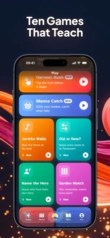

SCROLLWAY / BIBLE NAVIGATION
Find the four Gospels
Matthew, Mark, Luke and John are the four Gospels. Acts comes next. Practice turning to the right book without needing to know a chapter or verse yet.
Choose a book
Your route:
Five trips complete
Look at the bookshelf
- Matthew
- Mark
- Luke
- John
- Acts of the Apostles
Take it to a real Bible
Open the table of contents and find Mark. Leave a finger there and turn toward John. Which book do you pass? Luke sits between them. Try the same exercise from Acts toward John. The practice counts changes of book, regardless of how many printed pages you turn.
Check the New Testament contents · Read Luke’s road-to-Emmaus story activity
Keep exploring on iPhone
Honest Little Apps publishes Scrollway, a Bible study game with short quizzes and a Bible reader. Its “Old or New?” game asks players to sort verses by testament. This five-book exercise is an independent browser companion.
Explore Scrollway on the App Store ↗